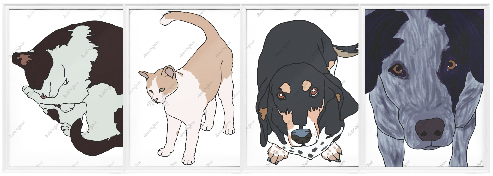

|
computer computer |

|
category category |
|  | draw draw |
Welcome.
ABOUT ME
For some quick background information on myself, I earned my B.S. in Business Admin. and MBA while participating in several on-campus organizations and working as a graduate assistant for several professors. I eventually joined the Anti-Money Laundering (AML) Analysis team at U.S. Bank, where I worked for several years.
I've now changed focus and am making a career pivot towards user experience research & user interface design, with a specialty in logo design. I am interested in entry-level, remote or hybrid design roles within teams open to welcoming first-time designers. In my spare time, I love working out, volunteering, traveling, video games, and watching movies and TV.